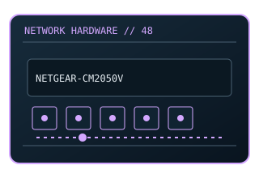

[ MODEL-SPECIFIC NETWORK HARDWARE ]
NETGEAR CM2050V DOCSIS 3.1 Voice Cable Modem
DOCSIS 3.1 cable gateway/modem with voice service support and 2.5GbE. This entry uses the labeled manufacturer model identifier and cites primary product/support documentation.

MODEL IDENTIFICATION: Match the complete model/part number and hardware revision on the item label to manufacturer documentation. Do not apply this entry to near-name variants.
Exact specifications and compatibility
| Cataloged model | NETGEAR CM2050V DOCSIS 3.1 Voice Cable Modem |
|---|---|
| Dedicated subcategory | Modems and line-termination devices |
| Bus / host interface | Coaxial cable WAN, Ethernet handoff and RJ-11 voice service ports. |
| Ports / physical interfaces | 1 × 2.5GbE Ethernet, telephone ports; DOCSIS 3.1. |
| PHY, radio or protocol | DOCSIS 3.1 and voice services depend on ISP certification/provisioning. |
| PoE | No PoE input or PoE output is documented for this product. |
| Link-rate vs throughput | 2.5GbE port is local link maximum; Internet service rates depend on the provider and plan. Link rates are nominal negotiated/PHY specifications, not measured application throughput; no measured specimen result is claimed. |
| Firmware / driver support | ISP-controlled modem firmware/voice provisioning; no PC driver. |
| Compatibility checks | Verify provider approval for voice and data, service plan, and exact model suffix before activation. |
Model-specific notes
Voice support is provider-dependent; phone-port presence alone does not activate service.
Primary manufacturer sources
- NETGEAR CM2050V official product specificationsManufacturer product specification or documentation for the exact model/family.
- Manufacturer support and compatibility resourcesFirmware, driver, compatibility, revision or support details; applicability may depend on the exact hardware revision and region.
Vendor maximum rates are not test results. Confirm regional variants, hardware revision and current support status with the manufacturer.